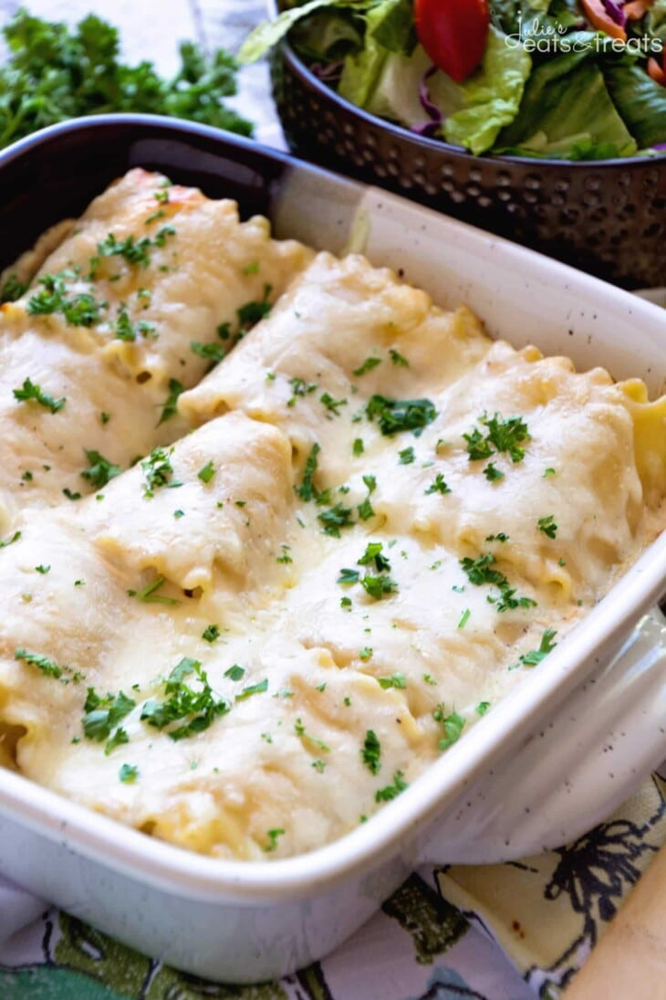

Return to main page
Chicken Alfredo Roll Ups

Ingredients:
- Lasagna noodles
- Chicken breast
- Seasonings - oregano and garlic salt
- Shredded mozzarella cheese
Steps:
- Prep – Preheat oven to 350 degrees F. Spray an 8×8 inch pan with non-stick spray. Pour 1/2 c. Alfredo sauce on bottom of pan.
- Prepare Lasagna Noodles – Cook lasagna noodles until they are al dente. Don’t overcook them as you will be baking them also.
Drain and rinse the noodles with cold water so they don’t stick together.
- Mix Filling – While they are cooking mix together the 1 c. Alfredo, 1 c. mozzarella cheese, chicken, garlic salt and oregano.
- Fill Lasagna Noodles – Lay out the noodles and blot the water off of them with a paper towel. Spread 1/9 of chicken mixture on
noodle. Roll up the lasagna noodle. Place the roll-ups, seam side down in the pan. Repeat with all of the noodles. Once they are
all in the pan pour the rest of the Alfredo sauce over them. Top with the remaining cheese.
- Bake – Bake in preheated oven at 350 degrees for 30 minutes.